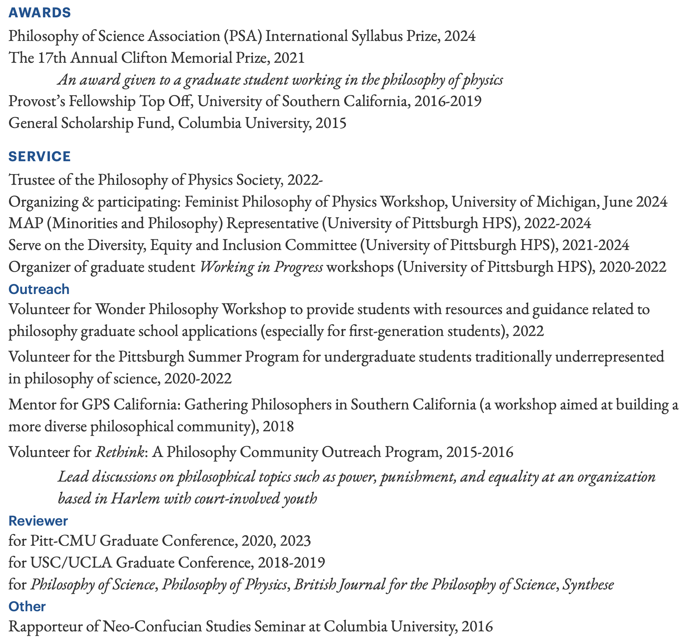

Bixin Bell Guo
I'm currently a PhD candidate at the University of Pittsburgh, Department of History and Philosophy of Science. My main interests are in philosophy of science, philosophy of physics, and metaphysics. I’m also interested in Chinese philosophy, feminist philosophy, and ethics (especially moral psychology and bioethics). Before moving to Pitt, I studied at the University of Southern California and Columbia University.
RESEARCH
Consider the table in front of you. It is continuous, solid, and extended. Physics, by contrast, gives very different descriptions of this table. It in fact consists of mostly empty space, scattered with numerous tiny particles. There are electromagnetic forces acting between the particles, which partially account for why your hand can’t simply pass though the table. At a more fundamental level, the ‘empty’ space within the table is not really empty but permeated by quantum fields—the particles are just excitations of those fields. How should we understand these drastically different pictures of the world? Is the table and the collection of particles the same system, merely manifesting differently at different scales? Or is the table something over and above the collective particles? What can we know about the table from studying the theories of particles?
My research primarily addresses questions like these concerned with inter-level relations, that is, relations between certain aspects of the world at different levels or scales. It aims to demonstrate how taking inter-level relations into account affects our understanding of the physical world; or, more specifically, how our conceptual schemes of science (such as ontology, laws, causation, and so on) work differently at different levels. My methodology bridges the metaphysical and the more practice-oriented approaches to philosophy of physics. Much of my work on inter-level relations falls into three main themes.
Inter-level relations in terms of emergence or reduction. Reduction is sometimes taken to be a relation between objects, and sometimes a relation between scientific theories. I investigate how these two kinds of reduction can be related—whether one is prior to the other. I argue that there are two distinct approaches to understanding reduction—what I call the ontology-first approach and the theory-first approach—which correspond to two ways in which ontological reduction and inter-theoretic reduction can be related. Further, I argue for the significance of this distinction by demonstrating that either one or the other approach has been taken as an implicit assumption in, and has in fact shaped, our understanding of what statistical mechanics is (whether its correct framework is Boltzmannian or Gibbsian). More specifically, I argue that Boltzmannian statistical mechanics assumes and relies on the ontology-first approach, whereas Gibbsian statistical mechanics should assume the theory-first approach.
B. Guo, “Two Approaches to Reduction: A Case Study from Statistical Mechanics”, Philosophy of Science (forthcoming). (Preprint)
The fundamental level. Taking inter-level relations into consideration exposes a tension within the metaphysics and philosophy of physics literature. Many discussions aim to use physics as a guide to elucidate what the world really, fundamentally is like—the fundamental ontology, the fundamental laws, or the fundamental structure of the world. However, we do not yet have a confirmed fundamental theory of physics. In this case, what can we possibly say about the fundamental that is properly informed by our best theories of physics? My paper offers a starting point to address this question. It focuses on the literature on the ontology of quantum mechanics, where the problem is especially salient: Many proposals aim at drawing the fundamental ontology of the world from quantum mechanics, even though they often focus on a non-fundamental theory such as nonrelativistic quantum particle mechanics. I argue that quantum mechanics can plausibly be informative about the fundamental if it is taken as a general framework theory, which covers a range of concrete quantum theories, including the Standard Model of particle physics and string theory. I use Wavefunction Realism as an example to demonstrate what kind of ontological lessons about the world at the fundamental level the quantum framework may teach us.
“Next Best Thing—What Can Quantum Mechanics Tell Us About the Fundamental Ontology of the World?” (Preprint)
Laws of nature at different levels. How are laws of special sciences related to the fundamental laws of physics? Do they share the same metaphysical status? Is it tenable to hold that the fundamental laws are objective while laws of special sciences are not? To address such questions, I start by examining prominent accounts of laws that focus on the fundamental laws (such as Lewis’s Best System Account and Loewer’s Package Deal Account). I address a common objection against Humean accounts that their laws are not objective and argue: Humean accounts are at odds with scientific realism in a way that would require significant changes to the standard formulations of scientific realism or Humean accounts to reconcile the two. More specifically, I argue that Humean accounts like Loewer’s, which take the fundamental ontology and laws as a package deal, conflict with scientific realism, while Humean accounts that do not take a package deal, such as Lewis’s, do not conform to scientific practice.
“Can Humeans be Scientific Realists?” (Preprint)
Additionally, I have secondary interests in Chinese philosophy, especially the metaphysics of Daoism and Neo-Confucianism as well as their role in the development of natural knowledge and science in Chinese traditions.
Laws of nature in Chinese philosophy. One common theme behind my primary research concerns the objectivity of laws and science more generally. This leads me to consider: could science be different? I look into the Chinese traditions for possibilities of how science could have developed in a different way. In particular, I investigate whether there is a notion of laws of nature by examining the classical texts centered around the Pre-Qin Period (before 221BC) and Song dynasty (960-1279). I argue that two notions in Chinese philosophy, dao 道 (often translated as the way or the course) and li 理 (translated as principle, reason, law, order, pattern, or coherence), count as, or at least can be seen as counterparts of, a notion of laws of nature.
“Is There a Notion of Laws of Nature in Chinese Classical Texts?” (Preprint)
TEACHING
Independent Instructor
Science in Global Perspective (Chinese History and Philosophy of Science), Fall 2022, Spring 2023; University of Pittsburgh (Full Syllabus)
Morality and Medicine (Bioethics), Fall 2020, Spring 2021; University of Pittsburgh
Teaching Assistant
Science, Knowledge and Objectivity, Spring 2018; David Wallace, University of Southern California
The Physical World and Our Place in It, Fall 2017; John Hawthorne, University of Southern California
MORE



Contact
Email: big15@pitt.edu
University of Pittsburgh, HPS
HPS 1101 Cathedral of Learning
4200 Fifth Avenue
Pittsburgh, PA USA 15260
Updated: October 2023